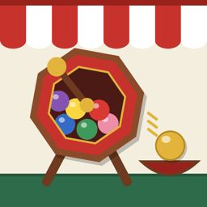

全員に回るまで重ならない福引き
当番・係を、日をまたいでも公平に決める福引きのくじ。iPhone と iPad のアプリです。
家のお風呂そうじ、クラスの日直、職場のそうじ、ランチのお店など、くり返し決めることごとに「くじの箱」を作り、商店街の福引きのガラガラを指で回して当たりを決めます。当たった人は、全員が1回ずつ当たるまで、あしたも、あさっても出ません（この1回りを「巡」と呼びます）。ガラガラの窓には、この巡でまだ当たっていない人の玉だけが見えます。
- 今回だけ休みの人を外せます。玉はガラガラに残り、次の回に回ります。休みのまま巡が終わったときは「前の巡の分」として、次からの回で先に当たります
- だれが何回当たったかを棒の表で見られます。いつ・だれが当たったかの記録も残り、まちがえて回したときは、いちばん新しい回を取り消せます
- 1回に何人でも引けます。順番決め（全員の順番）とチーム分け（2〜8組。人数の差は1人まで）もあります
- 当たる人は、玉の動きではなく、かたよりのない乱数で、この巡の残りの人から同じ割合で選びます
- 登録・課金はありません。くじの箱と記録はこの端末の中だけに保存します。画面のいちばん下に小さな広告が出ます（画面いっぱいの広告・動画の広告は出さず、広告の音は消しています）。消音モードのときは、当たりの鐘の音は鳴りません